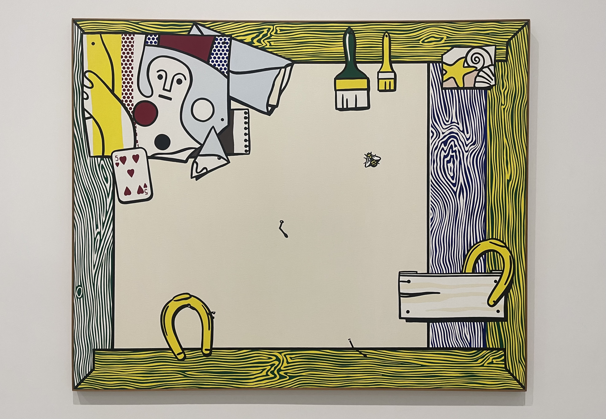

Posted October 11, 2025

Here is a quick run-down of the museums and galleries that I visited throughout the spring semester!
As expected, life as a junior in college is a little too busy to write reviews for every exhibit I visit (despite how much I’d like to). As such, I using this post to quickly highlight the amazing art I have gotten to see in the past couple of months! My favorites for each exhibit will be emphasized with a golden border.
This Broad finally explored the permanent collection of The Broad in LA! I’ve only ever visited the temporary exhibits at this particular museum, and since I didn’t feel especially drawn to the current special feature of Robert Thierren, I decided to finally check out The Broad’s extensive permanent collection of modern art. Since modern art is always a deeply polarizing mixed bag, I will also be marking my least favorites with a grey border.